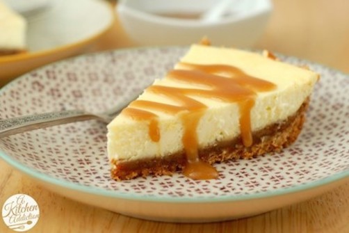
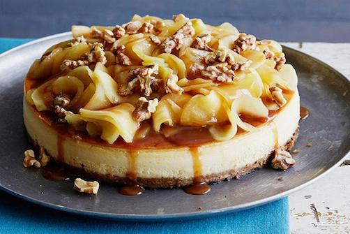
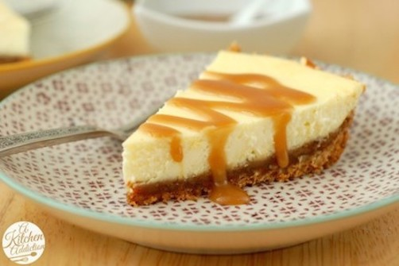

Ingredients
Crust
1 3/4 cups graham cracker crumbs (about 28 squares)
1/4 cup packed brown sugar
1/2 cup butter, melted
Filling
3 packages (8 oz each) cream cheese, softened
1 cup packed brown sugar
3 eggs
3/4 cup whipping cream
1/4 cup caramel-flavored coffee syrup
Caramel Sauce
1/2 cup butter
1 1/4 cups packed brown sugar
2 tablespoons caramel-flavored coffee syrup
1/2 cup whipping cream
1 1/2 teaspoons flaked sea salt
Directions
1 Heat oven to 350°F. Wrap outside bottom and side of 9-inch springform pan with heavy-duty foil to prevent leaking. Grease inside bottom and side of pan with shortening. In small bowl, mix crust ingredients. Press in bottom of pan. Bake 8 to 10 minutes or until set. Reduce oven temperature to 300°F. Cool crust 10 minutes.
2 Meanwhile, in large bowl, beat cream cheese and 1 cup brown sugar with electric mixer on medium speed until smooth. Beat in eggs, one at a time, just until blended. Add 3/4 cup whipping cream and 1/4 cup coffee syrup; beat until blended. Pour filling over crust.
3 Bake at 300°F 1 hour 10 minutes to 1 hour 20 minutes or until edge of cheesecake is set at least 2 inches from edge of pan but center of cheesecake still jiggles slightly. Turn oven off; open door 4 inches. Let cheesecake remain in oven 30 minutes. Run small metal spatula around edge of pan to loosen cheesecake. Cool in pan on cooling rack 30 minutes. Refrigerate at least 6 hours or overnight.
4 In 2-quart saucepan, melt 1/2 cup butter over medium heat. Add 1 1/4 cups brown sugar and 2 tablespoons coffee syrup. Heat to boiling; cook and stir 1 minute until sugar dissolves. Stir in 1/2 cup whipping cream; return to boiling. Remove from heat. Cool 10 minutes.
5 To serve, run small metal spatula around edge of springform pan; carefully remove foil and side of pan. Cut cheesecake into slices. Drizzle caramel sauce over slices; sprinkle with salt. Cover; refrigerate any remaining cheesecake.
![Caramel Apple Cheesecake".  Caramel Apple Cheesecake Ingredients Crust 1 3/4 cups graham cracker crumbs (about 28 squares) 1/4 cup packed brown sugar 1/2 cup butter, melted Filling 3 packages (8 oz each) cream cheese, softened 1 cup packed brown sugar 3 eggs 3/4 cup whipping cream 1/4 cup caramel-flavored coffee syrup Caramel Sauce 1/2 cup butter 1 1/4 cups packed brown sugar 2 tablespoons caramel-flavored coffee syrup 1/2 cup whipping cream 1 1/2 teaspoons flaked sea salt Directions 1 Heat oven to 350°F. Wrap outside bottom and side of 9-inch springform pan with heavy-duty foil to prevent leaking. Grease inside bottom and side of pan with shortening. In small bowl, mix crust ingredients. Press in bottom of pan. Bake 8 to 10 minutes or until set. Reduce oven temperature to 300°F. Cool crust 10 minutes. 2 Meanwhile, in large bowl, beat cream cheese and 1 cup brown sugar with electric mixer on medium speed until smooth. Beat in eggs, one at a time, just until blended. Add 3/4 cup whipping cream and 1/4 cup coffee syrup; beat until blended. Pour filling over crust. 3 Bake at 300°F 1 hour 10 minutes to 1 hour 20 minutes or until edge of cheesecake is set at least 2 inches from edge of pan but center of cheesecake still jiggles slightly. Turn oven off; open door 4 inches. Let cheesecake remain in oven 30 minutes. Run small metal spatula around edge of pan to loosen cheesecake. Cool in pan on cooling rack 30 minutes. Refrigerate at least 6 hours or overnight. 4 In 2-quart saucepan, melt 1/2 cup butter over medium heat. Add 1 1/4 cups brown sugar and 2 tablespoons coffee syrup. Heat to boiling; cook and stir 1 minute until sugar dissolves. Stir in 1/2 cup whipping cream; return to boiling. Remove from heat. Cool 10 minutes. 5 To serve, run small metal spatula around edge of springform pan; carefully remove foil and side of pan. Cut cheesecake into slices. Drizzle caramel sauce over slices; sprinkle with salt. Cover; refrigerate any remaining cheesecake.](images/CaramelApple.jpeg){kind=link}
![Salted Caramel  Ingredients Crust 1 3/4 cups graham cracker crumbs (about 28 squares) 1/4 cup packed brown sugar 1/2 cup butter, melted Filling 3 packages (8 oz each) cream cheese, softened 1 cup packed brown sugar 3 eggs 3/4 cup whipping cream 1/4 cup caramel-flavored coffee syrup Caramel Sauce 1/2 cup butter 1 1/4 cups packed brown sugar 2 tablespoons caramel-flavored coffee syrup 1/2 cup whipping cream 1 1/2 teaspoons flaked sea salt Directions 1 Heat oven to 350°F. Wrap outside bottom and side of 9-inch springform pan with heavy-duty foil to prevent leaking. Grease inside bottom and side of pan with shortening. In small bowl, mix crust ingredients. Press in bottom of pan. Bake 8 to 10 minutes or until set. Reduce oven temperature to 300°F. Cool crust 10 minutes. 2 Meanwhile, in large bowl, beat cream cheese and 1 cup brown sugar with electric mixer on medium speed until smooth. Beat in eggs, one at a time, just until blended. Add 3/4 cup whipping cream and 1/4 cup coffee syrup; beat until blended. Pour filling over crust. 3 Bake at 300°F 1 hour 10 minutes to 1 hour 20 minutes or until edge of cheesecake is set at least 2 inches from edge of pan but center of cheesecake still jiggles slightly. Turn oven off; open door 4 inches. Let cheesecake remain in oven 30 minutes. Run small metal spatula around edge of pan to loosen cheesecake. Cool in pan on cooling rack 30 minutes. Refrigerate at least 6 hours or overnight. 4 In 2-quart saucepan, melt 1/2 cup butter over medium heat. Add 1 1/4 cups brown sugar and 2 tablespoons coffee syrup. Heat to boiling; cook and stir 1 minute until sugar dissolves. Stir in 1/2 cup whipping cream; return to boiling. Remove from heat. Cool 10 minutes. 5 To serve, run small metal spatula around edge of springform pan; carefully remove foil and side of pan. Cut cheesecake into slices. Drizzle caramel sauce over slices; sprinkle with salt. Cover; refrigerate any remaining cheesecake.](images/saltedcaramel.jpeg){kind=link}